小豆 いちごわらび餅
デビュー！
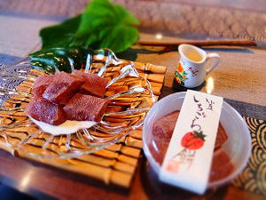
苺の果汁を練り込んだわらび餅に
粉末にした小豆をまぶして
クリームを添えました。
----------------------------------------------------
谷地八幡宮さんから
ご注文をいただきました！
アマビエポッポ様
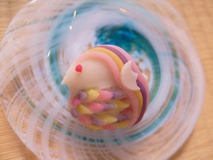
谷地八幡宮さんで７月に行われた
夏越の大祓で使われる
上生菓子を作らせて
いただきました！
↑こちらが
谷地八幡宮さんのアイコンの
アマビエポッポ様
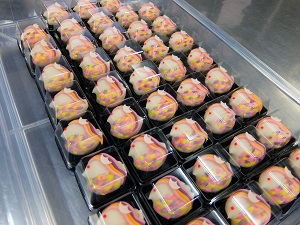
----------------------------------------------------
2020年 夏
葛っこ紗里紗里に
新しい仲間

さくらんぼ紗里紗里
デビュー！
山形県産さくらんぼの
果肉と果汁をたっぷり使用した
贅沢な溶けない葛アイス
※写真はいちごと抹茶です。
----------------------------------------------------
もっちり食感
「米（まい）どれーぬ」
大豆の粉と米粉の
和風マドレーヌ
2017年から新登場☆
小麦粉不使用です
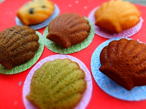
季節によって味が変わるので
色々な味を楽しでくださいね！
只今のラインナップ
・黒豆
・胡桃
・紅花
・黒糖
・玄米茶
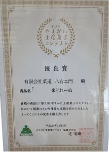
なんと、米ドレーヌは昨年12月に開催された
「第３回 やまがた土産菓子コンテスト」
で優良賞をいただきました！
コンテストに出品されたお味は
・プレーン
・つや姫玄米茶
・紅花
の３種類☆
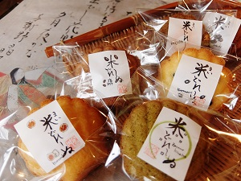
各種類、手作りのシールを貼ってお店に並んでいます。
お気に入りの味を見つけてくださいね！
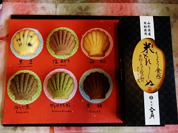
お土産、ご贈答用にもぜひ！
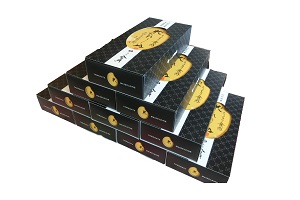
↑↑↑専用の箱もご用意しております！↑↑↑
----------------------------------------------------
「週末に行く小さな旅」を提案するガイドブック
ことりっぷ
に八右エ門が掲載されました☆

----------------------------------------------------
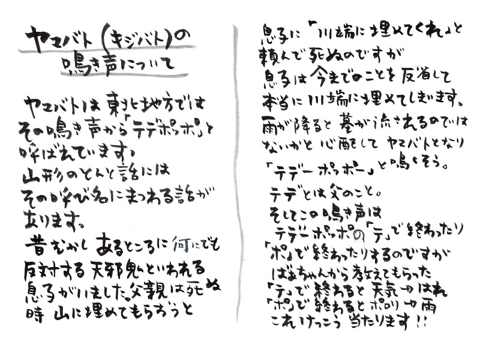
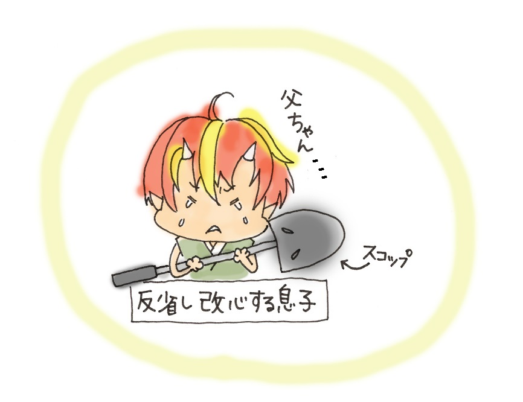
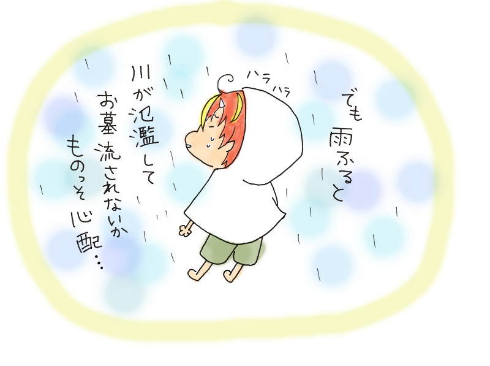
新型コロナウイルス感染防止対策及び
お客様へのお願い
お客様により安心にご利用いただけるよう、新型コロナウイルスへの感染防止
対策を以下の通り取り組んでおります。
お客様にはご不便、お手数をお掛け致しますが新しい生活様式に向けご理解
とご協力をお願い申し上げます。
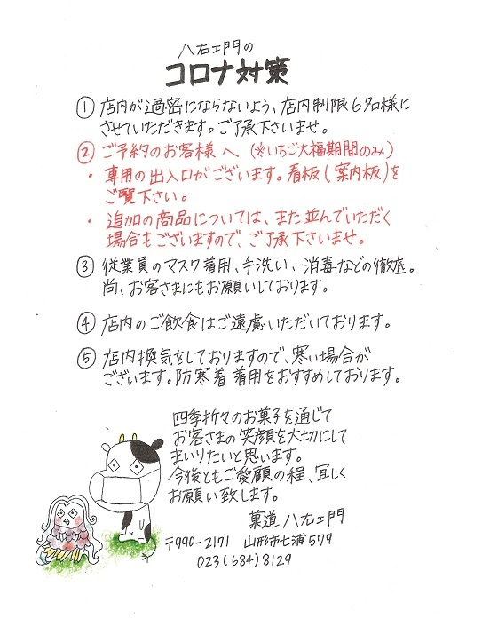
------------------------------------------------------------------------------
檸檬しぐれ 販売開始しました
梅雨の季節も心がスッキリするような、この夏一押しのお菓子です！
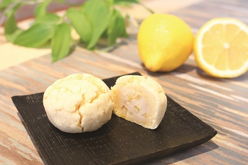
定番和菓子・黄味時雨を爽やかにアレンジ！
香り高い瀬戸内産レモンを使用し、すりおろしたレモンの皮を
混ぜ込んだ生地で、レモンピール入りの白餡を包み、
蒸し上げました。
ふわふわしっとりの食感に、レモンピールがアクセント。
レモンの甘酸っぱい香りが口いっぱいに広がります。